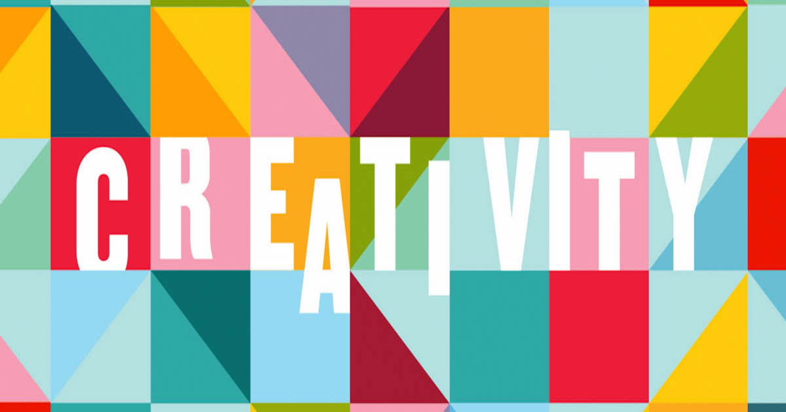

OVERVIEW

Throughout the semester, many theories have been presented about what creativity is,
how it develops, and if it can be recognized. While many of these theories differ in
how they define creativity, I define it as the use of imagination, background knowledge,
divergent thinking, problem-solving, and emotional expression to think of or create novel
ideas and products. After studying these and developing our definition, it has been clear
that while we know some things about creativity, many aspects of it are up to belief or are
still to be questioned. I know that creativity is utilized in all fields and exists everywhere,
I believe that it is often enhanced by mental illness and cannot be accurately measured, and I
question if it can be learned or properly recognized.